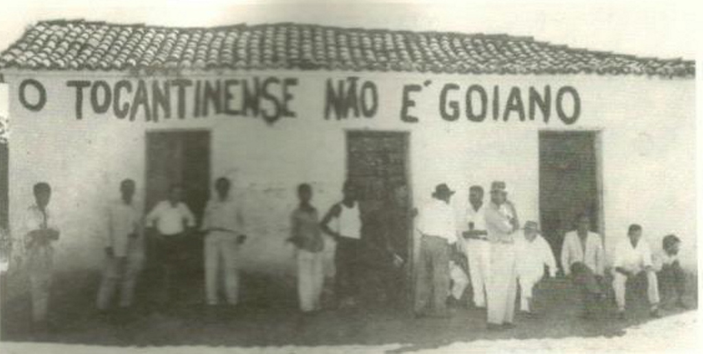

<style>
    section {
        display: flex;
        flex-direction: row;
        align-items: center;
        justify-content: center;
        gap: 40px;
        margin: 40px 0;
    }


    .conteudo {
        max-width: 1000px;
        font-family: Arial, sans-serif;
        font-size: 16px;
        line-height: 1.6;
        color: #333;
        text-align: justify;
    }

    .conteudo p {
        
        margin-bottom: 16px;
    }
    img {
        width: 600px;
        height: auto;
        border-radius: 8px;
    }
</style>
<section>
    <div class="conteudo">
        
    <p>Em 15 de setembro de 1821, Segurado publicou uma proclamação que marca simbolicamente uma das primeiras lutas pela criação do Estado do Tocantins.<p>

    <p>“Habitantes da Comarca da Palma! É tempo de sacudir o jugo de um governo despótico; todas as províncias do Brasil nos têm dado este exemplo; os nossos irmãos de Goiás fizeram um esforço infrutífero, ou por mal delineado, ou por ser rebatido por força superior. Eles continuam na escravidão, e até um dos principais habitantes desta comarca ficou em ferros. Palmenses sejamos livres e tenhamos segurança pessoal; unamo-nos e principiemos a gozar as vantagens que nos promete a Constituição!”</p>

    <h3>PRÓ-CRIAÇÃO DO ESTADO DO TOCANTINS – DÉCADA DE 50</h3>

    <p>O juiz de Direito de Porto Nacional, Feliciano Machado Braga, junto a figuras como Fabrício César Freire, Osvaldo Cruz da Silva, João Matos Quinaud, Dr. Francisco Mascarenhas e Dr. Severo Gomes, articulou o "Movimento Pró-Criação do Estado do Tocantins", expressão concreta do sentimento emancipacionista presente no norte de Goiás.
    Como símbolo de seu compromisso com a causa, o juiz passou a assinar documentos oficiais com a inscrição: “Porto Nacional, Estado do Tocantins”.
    </p>
    
    </div>
    <div class="imagem">
        
    </div>


</section>